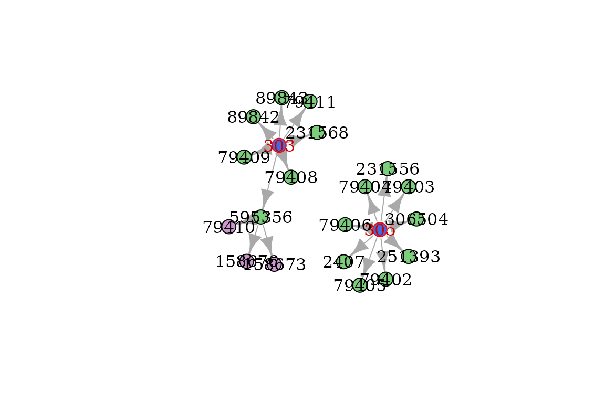

orphatools is an open-source library consisting in using
Orphanet resources for efficient
computations in R. This vignette provides all needed details for basic
and advanced usage in R.
Getting started
Installation
No available installation from CRAN yet.
Then load orphatools package to use it in your R
code:
Check options
As Orphanet publishes its data on a regular basis and in various language versions, you should first check if options are corrrectly set:
In order to update Orphanet data in orphatools, you will
need to add it via add_nomenclature_pack and
add_associated_genes.
Load data
You can start handling Orphanet data by using available loading functions:
# Data from the nomenclature pack
df_nomenclature = load_raw_nomenclature()
classif_data = load_classifications()
df_synonyms = load_synonyms()
df_redirections = load_raw_redirections()
# Accessibility: Translate Orphanet concepts using internal dictionary
df_nomenclature = load_nomenclature()
df_redirections = load_redirections()
# Data from the associated genes file
df_associated_genes = load_associated_genes()
df_genes_synonyms = load_genes_synonyms()Alternatively, you can easily access ORPHAcode properties through the following functions:
orpha_code = 303
get_label(orpha_code)
get_classification_level(orpha_code)
get_status(orpha_code)
get_type(orpha_code)
#> [1] "Dystrophic epidermolysis bullosa"
#> [1] "Group"
#> [1] "Active"
#> [1] "Clinical group"Operations on classification
Analyze genealogy
orphatools and igraph provide usefool
functions to analyze the Orphanet classification system.
Parents, children, siblings
orpha_code = 303
get_parents(orpha_code)
#> [1] "139027" "79361"
get_children(orpha_code)
#> [1] "79408" "79409" "595356" "79411" "89842" "89843" "231568"
get_siblings(orpha_code)
#> [1] "230857" "100" "774" "3071" "191" "3440" "902" "113"
#> [9] "500" "37" "1116" "1117" "1253" "1662" "2176" "139"
#> [17] "2272" "2273" "2309" "2556" "740" "2959" "3455" "910"
#> [25] "209" "2295" "758" "257" "305" "530" "33445" "79143"
#> [33] "79373" "98249" "220295" "289465" "352712" "363992" "438134" "90342"
#> [41] "304" "2908"Ancestors, descendants
orpha_code = 303
get_ancestors(orpha_code)
#> [1] "93890" "139027" "98053" "68346" "183426" "79361" "183530" "89826"
#> [9] "79353"
get_descendants(orpha_code)
#> [1] "595356" "79410" "158673" "158676" "79408" "79409" "79411" "89842"
#> [9] "89843" "231568"These functions also work with a vector of ORPHAcodes as an input. In this case, the returned value corresponds to the union of ancestors/descendants.
orpha_codes = c(303, 304)
get_ancestors(orpha_codes)
#> [1] "93890" "139027" "98053" "68346" "183426" "79361" "183530" "89826"
#> [9] "79353"
get_descendants(orpha_codes)
#> [1] "595356" "79410" "158673" "158676" "79408" "79409" "79411" "89842"
#> [9] "89843" "231568" "595346" "412181" "412189" "79396" "79397" "79399"
#> [17] "79400" "79401" "89838" "158681" "595351" "2325" "257" "300333"
#> [25] "508529" "158684"Lowest common ancestor (LCA)
The Lowest Common Ancestor (LCA) is the closest ancestor that the given ORPHAcodes have in common. It is possible to have several LCAs, when they belong to independent branches.
Complete family
complete_family is equivalent to find ancestors to a
limited level (e.g. grand-parents for max_depth=2), and return the whole
set of branches induced, including then parents, siblings, cousins,
…
orpha_codes = c('79400', '79401', '79410')
graph_family = complete_family(orpha_codes, max_depth=1)
graph_family = complete_family(orpha_codes, max_depth=2)See the Visualization section to plot and color your graph.
Alternate output
For all of these functions, it is sometimes more useful to get an
equivalent edgelist or graph, using the output
argument:
df_parents = get_parents(orpha_code, output='edgelist')
graph_descendants = get_descendants(orpha_code, output='graph')Find upper classification levels
subtype_to_disorder(orpha_code = '158676') # 158676 is a subtype of disorder
subtype_to_disorder(orpha_code = '303') # 303 is a group of disorder
get_lowest_groups(orpha_code = '158676')
#> [1] "595356"
#> character(0)
#> [1] "303"It is not recommended to use subtype_to_disorder if
orpha_code is a large vector because of efficiency
issues.
If you need to apply the function on a wide set of ORPHAcodes, you will probably need to :
convert your data frame to an orpha_df object. The usage of force_nodes argument allows you to make appear any ORPHAcode you need (like disorder codes), even if they are not present in data (but the subtypes are).
group_byandsummarize/mutate.Filter disorder codes.
See the [Aggregation] section for more details.
Specify classification
For all the functions described above, it is possible to analyze a
specific classification only through the df_classif
argument. You might want to be restricted to an edgelist from one of the
functions above, or directly take one of the 34 Orphanet
classifications, which are stored in the list returned by
load_classifications.
Find the corresponding classification through the following:
all_classif = load_classifications()
cat(sprintf('%s\n', names(all_classif)))
#> 146_rare_cardiac_diseases_en_2023
#> 147_rare_developmental_anomalies_during_embryogenesis_en_2023
#> 148_rare_cardiac_malformations_en_2023
#> 150_rare_inborn_errors_of_metabolism_en_2023
#> 152_rare_gastroenterological_diseases_en_2023
#> 156_rare_genetic_diseases_en_2023
#> 181_rare_neurological_diseases_en_2023
#> 182_rare_abdominal_surgical_diseases_en_2023
#> 183_rare_hepatic_diseases_en_2023
#> 184_rare_respiratory_diseases_en_2023
#> 185_rare_urogenital_diseases_en_2023
#> 186_rare_surgical_thoracic_diseases_en_2023
#> 187_rare_skin_diseases_en_2023
#> 188_rare_renal_diseases_en_2023
#> 189_rare_ophthalmic_diseases_en_2023
#> 193_rare_endocrine_diseases_en_2023
#> 194_rare_hematological_diseases_en_2023
#> 195_rare_immunological_diseases_en_2023
#> 196_rare_systemic_and_rheumatological_diseases_en_2023
#> 197_rare_odontological_diseases_en_2023
#> 198_rare_circulatory_system_diseases_en_2023
#> 199_rare_bone_diseases_en_2023
#> 200_rare_otorhinolaryngological_diseases_en_2023
#> 201_rare_infertility_disorders_en_2023
#> 202_rare_neoplastic_diseases_en_2023
#> 203_rare_infectious_diseases_en_2023
#> 204_rare_diseases_due_to_toxic_effects_en_2023
#> 205_rare_gynecological_and_obstetric_diseases_en_2023
#> 209_rare_surgical_maxillo-facial_diseases_en_2023
#> 212_rare_allergic_disease_en_2023
#> 216_rare_teratologic_diseases_en_2023
#> 231_rare_systemic_and_rheumatological_diseases_of_childhood_en_2023
#> 233_rare_transplant-related_diseases_en_2023
#> 235_rare_disorder_without_a_determined_diagnosis_after_full_investigation_en_2023Here are some examples:
orpha_code = 303
orpha_codes = c('79400', '79401', '79410')
get_ancestors(orpha_code, df_classif=classif_data[['ORPHAclassification_156_rare_genetic_diseases_fr_2023']])
get_ancestors(orpha_code, df_classif=classif_data[['ORPHAclassification_146_rare_cardiac_diseases_fr_2023']])
get_siblings(orpha_code, df_classif=classif_data[['ORPHAclassification_156_rare_genetic_diseases_fr_2023']])
get_siblings(orpha_code, df_classif=classif_data[['ORPHAclassification_187_rare_skin_diseases_fr_2023']])
complete_family(orpha_codes, df_classif=classif_data[['ORPHAclassification_187_rare_skin_diseases_fr_2023']])Visualization
Orphanet built a large classification system that sometimes needs a specific display to better understand how ORPHAcodes are related to each other.
Plot
The most straightforward way to visualize it is to plot the graph.
Use the layout argument to sort ORPHAcodes from top to
bottom.
orpha_code = 303
graph = get_ancestors(orpha_code, output='graph')
plot(graph)
plot(graph, layout=igraph::layout_as_tree)
plot(graph, layout=orphatools::layout_tree)
For larger graphs, a static plot won’t be enough to see the graph
details. Try interactive_plot function for a dynamic plot,
which allows you to move/zoom and to change nodes position.
interactive_plot(graph_ancestors)You can emphasize codes on the plotted graph to locate where are some
specific ORPHAcodes with color_codes, while
color_classification_level .
init_codes = c(303, 305)
graph = get_descendants(init_codes, output='graph') %>%
color_codes(init_codes) %>%
color_class_levels()
plot(graph)
Hierarchical structures
orpha_codes = c(303, get_descendants('303'))
df = data.frame(orpha_code=orpha_codes) %>%
orpha_df(orpha_code_col='orpha_code') %>%
left_join(load_nomenclature(), by='orpha_code')
df_indent = apply_orpha_indent(df, indented_cols='label', prefix='Label_')
kable(df_indent, 'html')| orpha_code | level | status | type | Label_1 | Label_2 | Label_3 |
|---|---|---|---|---|---|---|
| 303 | Group | Active | Clinical group | Dystrophic epidermolysis bullosa | ||
| 595356 | Disorder | Active | Disease | Localized dystrophic epidermolysis bullosa | ||
| 79410 | Subtype | Active | Clinical subtype | Localized dystrophic epidermolysis bullosa, pretibial form | ||
| 158673 | Subtype | Active | Clinical subtype | Localized dystrophic epidermolysis bullosa, acral form | ||
| 158676 | Subtype | Active | Clinical subtype | Localized dystrophic epidermolysis bullosa, nails only | ||
| 79408 | Disorder | Active | Disease | Autosomal recessive generalized dystrophic epidermolysis bullosa, severe form | ||
| 79409 | Disorder | Active | Disease | Recessive dystrophic epidermolysis bullosa inversa | ||
| 79411 | Disorder | Active | Disease | Self-improving dystrophic epidermolysis bullosa | ||
| 89842 | Disorder | Active | Disease | Autosomal recessive generalized dystrophic epidermolysis bullosa, intermediate form | ||
| 89843 | Disorder | Active | Disease | Dystrophic epidermolysis bullosa pruriginosa | ||
| 231568 | Disorder | Active | Disease | Autosomal dominant generalized dystrophic epidermolysis bullosa |
Aggregation operations
For a hierarchical structure like the ORPHA trees, you will probably need to take codes dependencies into account. Let’s consider the simplified structure as the following :
In many cases, your data operations would lead you to something like :
df_patients = data.frame(patient_id = c(1,1,2,3,4,5,6),
code = c('303', '158673', '595356', '305', '79406', '79406', '595356'),
status = factor(c('ongoing', 'confirmed', 'ongoing', 'ongoing', 'confirmed', 'ongoing', 'ongoing'), levels=c('ongoing', 'confirmed'), ordered=TRUE))
kable(df_patients, 'html')| patient_id | code | status |
|---|---|---|
| 1 | 303 | ongoing |
| 1 | 158673 | confirmed |
| 2 | 595356 | ongoing |
| 3 | 305 | ongoing |
| 4 | 79406 | confirmed |
| 5 | 79406 | ongoing |
| 6 | 595356 | ongoing |
How many patients can be gathered for each ORPHAcode ?
Naive grouping method
The basic grouping operation will consider each ORPHAcode as independent.
The naive counting method will then giving you the following results.
| code | n |
|---|---|
| 158673 | 1 |
| 303 | 1 |
| 305 | 1 |
| 595356 | 2 |
| 79406 | 2 |
Customized grouping method
Converting your data frame to an orpha_df object will
change the group_by behavior on data :
You can observe the direct effect on results of such a method :
df_counts = df_patients %>% orpha_df(orpha_code_col = 'code') %>% group_by(code) %>% count() %>% as.data.frame()
kable(df_counts, 'html')| code | n |
|---|---|
| 158673 | 1 |
| 303 | 4 |
| 305 | 3 |
| 595356 | 3 |
| 79406 | 2 |
You might also want to count distinct patients instead of all rows present in data :
df_counts = df_patients %>% orpha_df(orpha_code_col = 'code') %>% group_by(code) %>% summarize(n = n_distinct(patient_id)) %>% as.data.frame()
kable(df_counts, 'html')| code | n |
|---|---|
| 158673 | 1 |
| 303 | 3 |
| 305 | 3 |
| 595356 | 3 |
| 79406 | 2 |
This also works with mutate:
# Naive
df_patients_extended = df_patients %>% group_by(code) %>% mutate(n_included = n_distinct(patient_id)) %>% as.data.frame()
kable(df_patients_extended, 'html')| patient_id | code | status | n_included |
|---|---|---|---|
| 1 | 303 | ongoing | 1 |
| 1 | 158673 | confirmed | 1 |
| 2 | 595356 | ongoing | 2 |
| 3 | 305 | ongoing | 1 |
| 4 | 79406 | confirmed | 2 |
| 5 | 79406 | ongoing | 2 |
| 6 | 595356 | ongoing | 2 |
# Turn on Orphanet mode
df_patients_extended_orpha = df_patients %>% orpha_df(orpha_code_col = 'code') %>% group_by(code) %>% mutate(n_included = n_distinct(patient_id)) %>% as.data.frame()
kable(df_patients_extended_orpha, 'html')| patient_id | code | status | n_included |
|---|---|---|---|
| 1 | 303 | ongoing | 3 |
| 1 | 158673 | confirmed | 1 |
| 2 | 595356 | ongoing | 3 |
| 3 | 305 | ongoing | 3 |
| 4 | 79406 | confirmed | 2 |
| 5 | 79406 | ongoing | 2 |
| 6 | 595356 | ongoing | 3 |
If your interest is focused on disorders only, keep in mind that
subtype_to_disorder is unadvised, for computing reasons.
The method presented in this section is considerably more efficient when
the sample size increases. Then you simply can filter disorder codes to
get the desired result.
df_nomenclature = load_nomenclature() %>% select(orpha_code, level)
df_counts = df_patients %>%
orpha_df(orpha_code_col = 'code') %>%
group_by(code) %>%
summarize(n = n_distinct(patient_id)) %>%
left_join(df_nomenclature, by=c('code'='orpha_code')) %>%
filter(level == 'Disorder') %>%
as.data.frame()
kable(df_counts, 'html')| code | n | level |
|---|---|---|
| 595356 | 3 | Disorder |
| 79406 | 2 | Disorder |
df_nomenclature = load_nomenclature() %>% select(orpha_code, level)
df_status = df_patients %>%
orpha_df(orpha_code_col = 'code') %>%
group_by(patient_id, code) %>%
summarize(status = max(status)) %>%
left_join(df_nomenclature, by=c('code'='orpha_code'))
kable(df_status, 'html')| code | patient_id | status | level |
|---|---|---|---|
| 158673 | 1 | confirmed | Subtype |
| 303 | 1 | confirmed | Group |
| 303 | 2 | ongoing | Group |
| 303 | 6 | ongoing | Group |
| 305 | 3 | ongoing | Group |
| 305 | 4 | confirmed | Group |
| 305 | 5 | ongoing | Group |
| 595356 | 1 | confirmed | Disorder |
| 595356 | 2 | ongoing | Disorder |
| 595356 | 6 | ongoing | Disorder |
| 79406 | 4 | confirmed | Disorder |
| 79406 | 5 | ongoing | Disorder |
Finally some desired ORPHAcode might still be missing in the results. The main reason is the absence of any of this ORPHAcode in data, even if their subtypes are mentioned. In these cases, the force_nodes argument is what you want :
df_nomenclature = load_nomenclature() %>% select(orpha_code, level)
df_counts = df_patients %>%
orpha_df(orpha_code_col = 'code', force_codes = 231568) %>%
group_by(code) %>%
summarize(n = n_distinct(patient_id)) %>%
left_join(df_nomenclature, by=c('code'='orpha_code')) %>%
filter(level == 'Disorder') %>%
as.data.frame()
kable(df_counts, 'html')| code | n | level |
|---|---|---|
| 231568 | 0 | Disorder |
| 595356 | 3 | Disorder |
| 79406 | 2 | Disorder |
Update codes
As the Orphanet classification constantly evolves, you may need to retrospectively update the ORPHAcodes registered in your database. This package proposes a solution for two possible issues:
- The ORPHAcodes that need to be redirected (deprecated or obsoletes).
- The ORPHAcodes that could have been more specific (using mutated genes information).
Redirections
orpha_codes = c(304, 166068, 166457)
redirect_code(orpha_codes)
#> [1] "304" "166063" "166457"
redirect_code(orpha_codes, deprecated_only = TRUE)
#> [1] "304" "166063" "166457"Specifications
orpha_code_cmt1 = 65753
orpha_code_cmtX = 64747
# Specification possible
specify_code(orpha_code_cmt1, 'MPZ', mode='symbol') # CMT1B is the lonely ORPHAcode both associated with CMT1 and MPZ
#> [1] "101082"
specify_code(orpha_code_cmt1, c('MPZ', 'POMT1'), mode='symbol') # POMT1 doesn't bring ambiguity
#> [1] "101082"
# Specification impossible
specify_code(orpha_code_cmtX, 'MPZ', mode='symbol') # No ORPHAcode is associated both to CMTX and MPZ
#> [1] "64747"
specify_code(orpha_code_cmt1, 'PMP22', mode='symbol') # Several ORPHAcodes are associated both to CMT1 and PMP22 (CMT1A and CMT1E)
#> [1] "65753"
specify_code(orpha_code_cmt1, c('MPZ', 'PMP22'), mode='symbol') # Several ORPHAcodes are associated both to CMT1 and PMP22 (CMT1A and CMT1E)
#> [1] "65753"